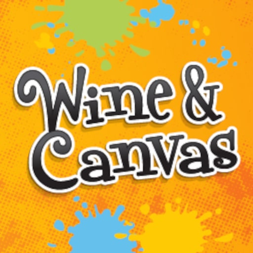

Studio home base
5248 Monroe St. in Toledo
The official Toledo studio is the anchor for public Paint & Sip classes, wine glass events, Cookies & Canvas sessions, and private parties.
Phone: (419) 705-0911
Email: infotoledo@wineandcanvas.com

Wine & Canvas Toledo centers its brand around beginner-friendly Paint & Sip nights, private parties, and mobile events, with a Monroe Street studio plus service across Lucas, Wood, Ottawa, Sandusky, Fulton, and Monroe County, Michigan.
Studio home base
The official Toledo studio is the anchor for public Paint & Sip classes, wine glass events, Cookies & Canvas sessions, and private parties.
Phone: (419) 705-0911
Email: infotoledo@wineandcanvas.com
Private parties
The Toledo site leans hard into birthdays, showers, bachelorette parties, team-building events, fundraisers, and friend-group nights with a simple booking path.
See private party detailsWhat We Do
The official Toledo site consistently highlights public classes, private bookings, kids events, and specialty formats that give venues and hosts more than one way to book.
Core class
Classic step-by-step Paint & Sip classes built for beginners, date nights, girls' nights, and casual group outings.
Kids and families
Kid-friendly painting sessions that pair guided art with a family format the official site uses for holiday and special-event programming.
Specialty format
Guests paint custom glassware in a shorter, approachable session that works well for public classes and private groups alike.
Expanded surfaces
Beyond canvas, the brand also promotes board art and select themed projects that give repeat guests a different take-home piece.
Custom favorite
Pet portrait events stay close to the Wine & Canvas identity: personal, social, beginner-friendly, and highly giftable.
High-conversion booking
Birthdays, bridal events, bachelorettes, fundraisers, and corporate groups are treated as a core service rather than a side offering.
What to expect
The official Toledo pages make the setup feel practical and low-friction: beginner-friendly instruction, included supplies, and flexible venue options.
The Toledo studio is described as cozy and welcoming, positioned for public classes and private events with free parking in back and a Monroe Street location across from Target.
Official venue details say studio private events require at least 10 guests and can accommodate up to 20, with refrigerator, microwave, and coffee maker access available on site.
Private paint party descriptions emphasize the included art basics: canvas, easels, brushes, paints, aprons, table covers, step-by-step instruction, setup, and cleanup.
Direct contact
The official contact page gives a clear path for questions, corporate requests, and private event planning.
Popular experiences
The official calendar and party pages keep circling back to three dependable draws: classic studio nights, specialty projects, and family or custom events.
Studio calendar
Beginner-friendly public classes stay at the center of the Toledo brand, with seasonal artwork and easy date-night energy.
Specialty add-on
Specialty surfaces give returning guests a reason to book again and let private hosts offer something beyond the standard 16x20 canvas.
Family and custom
Kids sessions and personalized pet portraits keep the lineup feeling broad, giftable, and accessible to more than just adult night-out traffic.
Gift certificates
The official Toledo page pushes eGift Certificates as an easy option when someone wants the experience but has not picked a date yet.
See Gift OptionsBooking occasions
Birthday parties, bridal showers, bachelorette weekends, fundraisers, corporate team-building, and girls' nights are all named repeatedly across the official Toledo pages.
Explore private party formatsService area
Current service is focused on Lucas, Wood, Ottawa, Sandusky, Fulton, and Monroe County, Michigan, with both studio dates and on-location events playing a role.